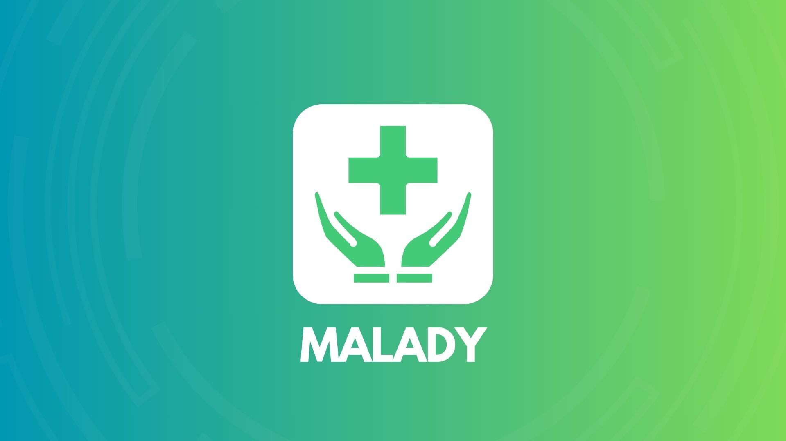

Management Application (C language)
As part of our C programming project, we developed a banking credit management application that integrates interactive user interfaces with complex processing functionalities.
This project introduced us to graphical interfaces using Windows APIs while leveraging C's efficiency and simplicity. We designed intuitive sign-up and login screens for an engaging user experience, leading to a console-based environment for core features like client data management, loan simulations, and repayment tracking.
This project highlights our exploration of combining GUI and console-based processing, marking a key step in our learning journey.

Medical Data Management and Statistical Analysis Application
Currently in development, this project aims to create a medical data management and statistical analysis application for hospitals or clinics.
Built with Python (Pandas, NumPy, Matplotlib, Tkinter) and PHP (MySQL, HTML/CSS), it enables patient record management, symptom tracking, and diagnostic analysis.
The system features a Tkinter-based interface for data entry, MySQL storage via PHP, and dynamic web-based access to patient records and statistics.
With integrated data visualization and epidemiological analysis, this project seeks to enhance healthcare data tracking and decision-making.

Exam Planning Application (Java)
Currently in development, this Java-based exam planning application is designed for the National School of Applied Sciences of Al-Hoceima (ENSAH). It aims to streamline exam scheduling, room and staff management, and monitoring processes.
The system offers both automated and manual exam scheduling, supervisor and absence tracking, and generates detailed statistical reports, ensuring an efficient and organized exam management process.